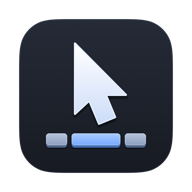

快捷键和鼠标手势
用快捷键、单击、双击或手绘轨迹触发动作。规则可以全局生效，也可以只在指定应用生效。

GestureKeysmacOS 工具 · v0.7.0
把常用操作绑到键盘、鼠标点击和手势。往右上划一下就关掉当前标签页，按 ⌃ 1 就后退。
macOS 13+ · Apple Silicon

用快捷键、单击、双击或手绘轨迹触发动作。规则可以全局生效，也可以只在指定应用生效。
规则随改随用。触发提示按规则开关；浅色、深色和登录时启动在「通用」设置。
从收到输入、匹配规则到派发动作，都能用同一个编号查。日志留在本机，不记录普通打字内容。

首次使用
GestureKeys.app 拖进「应用程序」。xattr -dr com.apple.quarantine /Applications/GestureKeys.app